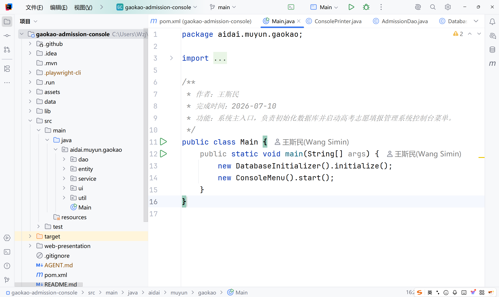
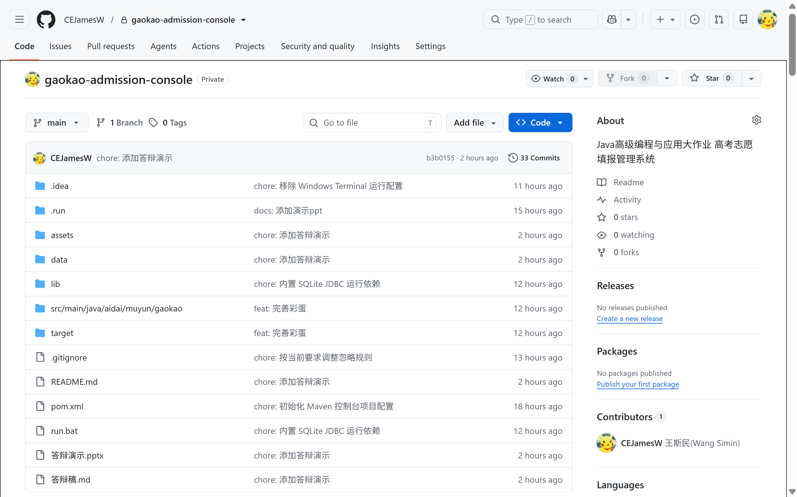
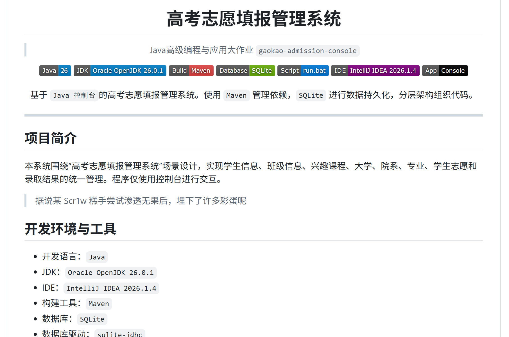
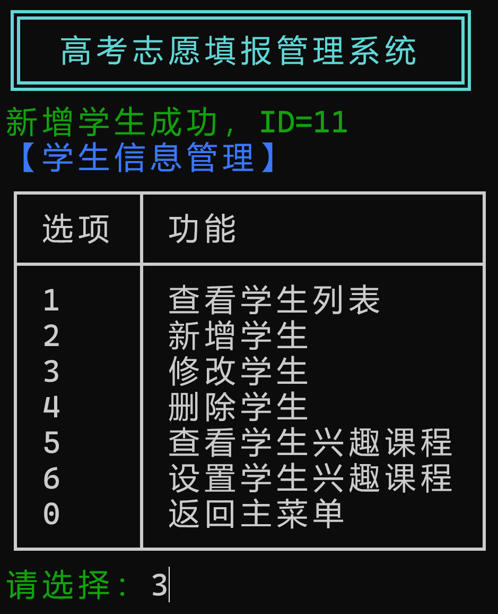
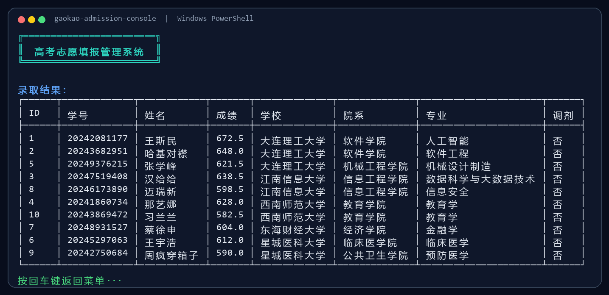
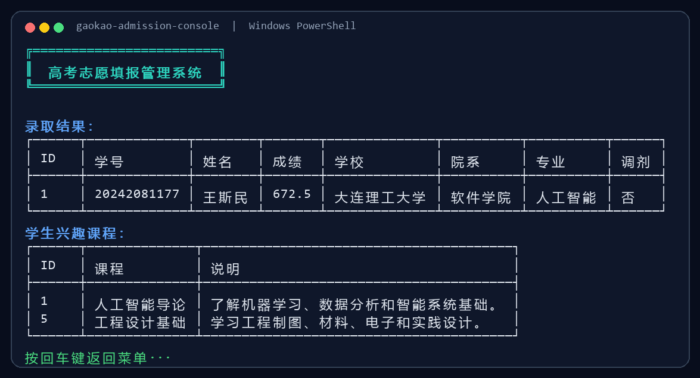
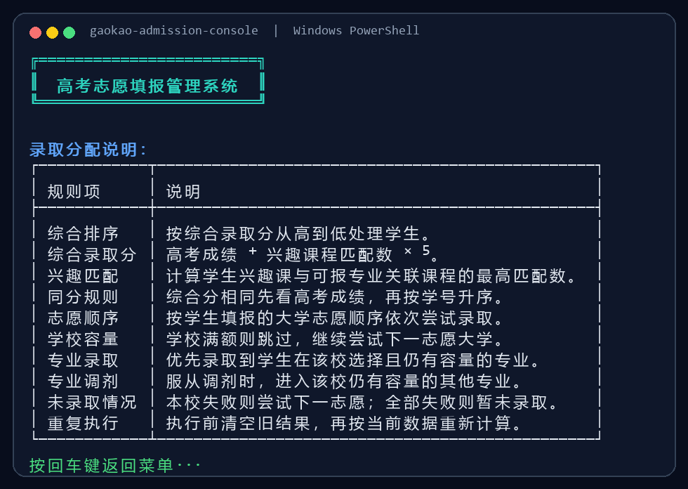

ADMISSION LEDGER
Java 高级编程与应用大作业
高考志愿填报管理系统
基于 Java 控制台、SQLite 数据库与分层架构的平行志愿录取管理系统。
CEJamesW/gaokao-admission-consolePresentation Flow
答辩目录
Team Responsibility
小组成员与模块分工
| 姓名 | 学号 | 主要分工 |
|---|---|---|
| 王斯民 | 20242081177 | 主程序、核心服务、录取算法 |
| 杜雨金 | 20242081137 | 实体模型设计 |
| 刘铭哲 | 20242081432 | DAO 数据访问层 |
| 王一诺 | 20242081462 | 学生信息管理 |
| 程驰越 | 20242081652 | 大学院系专业管理 |
| 霍禹名 | 20242081234 | 志愿填报管理 |
| 贾奇东 | 20242081639 | 数据库初始化 |
| 吴翔 | 20242081333 | 录取结果查询统计 |
| 刘子强 | 20242081318 | 输入工具和校验 |
| 顾秀饶 | 20242081156 | 文档辅助和展示输出 |
Code Responsibility
代码注释与完成情况

Project Scope
项目简介
本系统围绕“高考志愿填报管理系统”场景设计，实现学生信息、班级信息、兴趣课程、大学、院系、专业、学生志愿和录取结果的统一管理。
程序仅使用控制台进行交互，使用 Maven 管理依赖，SQLite 进行数据持久化，分层架构组织代码。
MAINaidai.muyun.gaokao.Main
RUNrun.bat
ARCHui / service / dao / entity
System Goals
建设目标
系统设计围绕题目要求展开：覆盖学生信息、大学院系专业、平行志愿填报、录取分配和结果查询，确保每个要求都能在控制台中完成演示。
Functional Modules
核心功能
Admission Algorithm
录取算法核心思想
综合录取分
高考成绩 + 兴趣课程匹配数 × 5
录取算法模拟真实场景，兼顾 高考成绩 与 兴趣课程。
Repository Overview
GitHub 项目总览

Documentation
README 与答辩材料组织

Collaboration Evidence
小组协作：GitHub 提交历史
main branch
40+ commits
Java console project
b3b0155chore: 添加答辩演示答辩材料与网页演示稿整理6602cedchore: 内置 SQLite JDBC 运行依赖保证下载仓库后可直接运行e4bce18feat: 完善兴趣课录取和控制台展示兴趣课程参与综合录取计算3cc45a4feat: 添加录取分配说明菜单补充算法说明与答辩演示入口605f6acdocs: 补充运行环境徽章和脚本提示完善 README、运行方式和项目说明2304d48chore: 随机化演示学生学号更新演示数据，更贴近真实记录
Workflow
从需求到答辩的工作流
Development Timeline
开发时间线
Architecture
分层架构与技术选型
Console Interaction
控制台菜单的交互设计

Database & Calculation
数据库与录取计算
学生志愿录取分配结果查询
Runtime Screenshot
运行演示：录取结果

初始化演示数据 -> 执行录取分配 -> 录取结果查询 -> 查看全部录取结果
Runtime Screenshot
运行演示：学生查询与规则说明


学生查询联动展示录取结果与兴趣课程
算法说明列出综合分、志愿顺序、容量和调剂规则
Live Demo
运行演示：视频演示
视频完整展示“启动系统、准备数据、执行录取、结果查询”的业务闭环。
Summary
项目总结
gaokao-admission-console
谢谢
高考志愿填报管理系统
答辩人：王斯民 20242081177